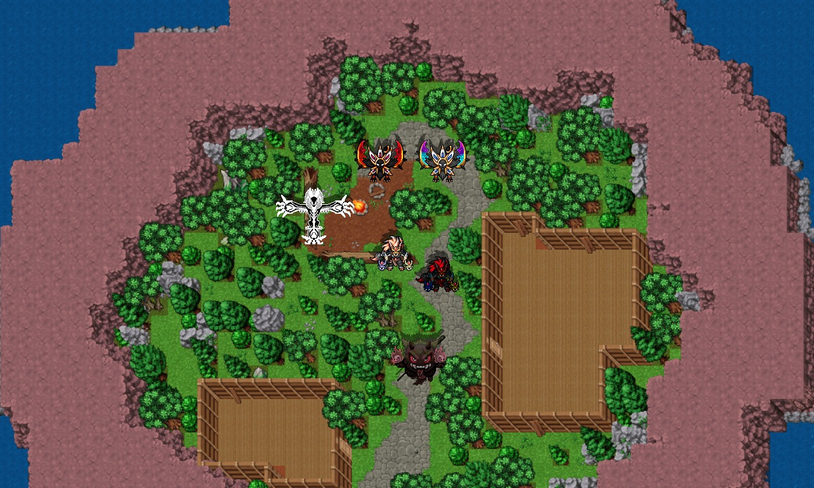
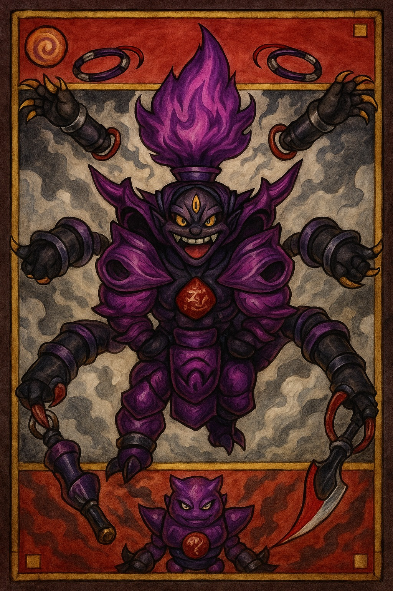
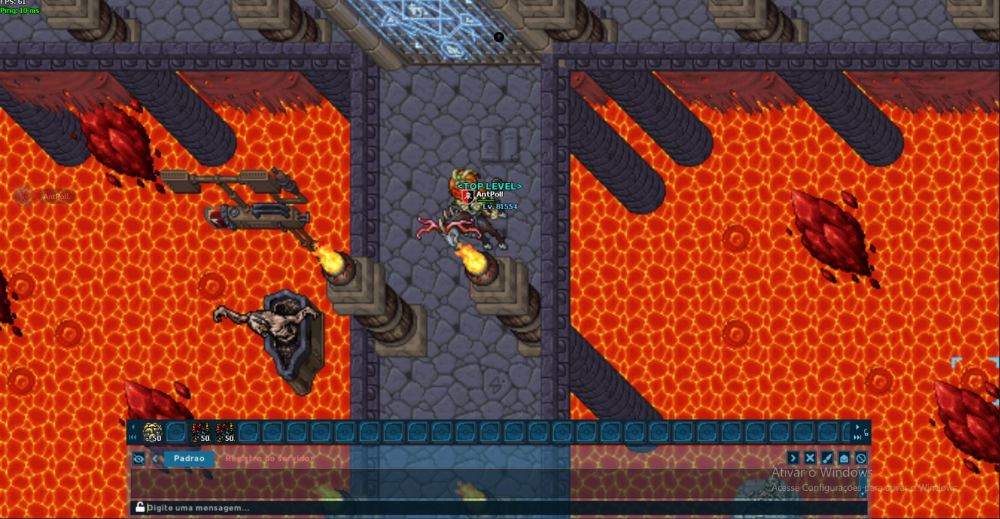
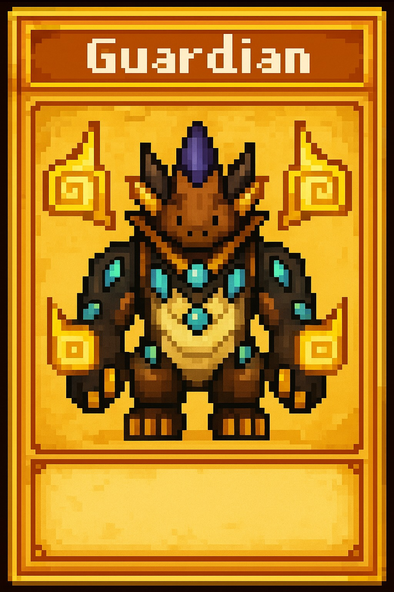
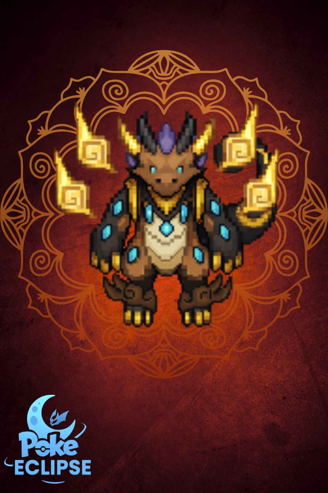

Últimas Atualizações
Fique por dentro de todas as novidades e anúncios do Pokemon Eclipse!
🔥 Atualização Especial — Novo Continente Chega ao Servidor!

O universo se expande mais uma vez! Prepare-se para explorar novas fronteiras e enfrentar desafios nunca vistos antes.
🌋 Continente do Inferno:
O reino das chamas foi finalmente revelado! Liberado com PVP ON, ele conta com 4 ilhas e 1 cidade central, onde apenas os mais fortes sobreviverão.
- 7 novos Pokémon NV 17 para upar.
- Novos Pokémon lendários e sombrios:
• Zoroark Lua Superior
• Infernal Gengar Lua Superior
• Infernal Zoroark Lua Superior
• Demon Yveltal
• Infernal Solgaleo Mode
- Loot de todas as cartas desses Pokémon do inferno.
☁️ Continente do Céu:
Acima das nuvens, uma nova ameaça (ou salvação) aguarda.
- Novo Pokémon: Solgaleo Ascensão Divina.
- Loot de cartas do Solgaleo.
🃏 Sistema de Coleção de Cartas:
- Colete cartas para trocar por Pokémon.
- Compre Pokémon diretamente, sem precisar das cartas.
- Estrelas indicam força e raridade de cada criatura.
🚀 Dois novos continentes, criaturas poderosas e um sistema inédito de coleção estão prontos para mudar a forma como você joga. Está preparado para conquistar o Céu e o Inferno?
Gacha — Demon Slayer Edition

A lâmina da respiração cortou o multiverso e trouxe novidades insanas para os treinadores!
O novo Gacha Demon Slayer está disponível agora, com recompensas dignas dos maiores caçadores e demônios.
Inclui:
🐉 2 Novos Pokémon Tier Infernal — poder sombrio e visual inspirado no universo de Kimetsu no Yaiba.
👕 Nova Outfit Exclusiva — trajes épicos baseados nos caçadores de demônios.
🌌 2 Novos Pokémon Tier Supreme — força e presença suprema no campo de batalha.
Cada giro no Gacha pode ser o portal para criaturas lendárias e itens raros. Entre na luta e prove que é digno de enfrentar os mais fortes!
VIP PLUSS — Rick and Morty Edition
Prepare-se para viajar pelo multiverso com o novo VIP PLUSS!
Disponível por 50 Space Coins, ele traz recompensas e bônus dignos de um verdadeiro cientista maluco.
Inclui:
👕 Outfit Exclusiva — visual temático inspirado no universo Rick and Morty.
🔮 Pokémon Exclusivo — único e interdimensional.
📈 Bônus Ativos por 31 dias: +35% XP, +35% Catch Rate e +35% Drop Rate.
Ative e sinta o poder de atravessar portais, conquistar mais loot, subir de nível mais rápido e capturar criaturas raras de qualquer realidade!
Primeiros Spoilers do Continente Inferno!

As chamas voltam a arder no horizonte... e os ventos carregam rumores de um novo território prestes a emergir das trevas.
O Continente Inferno está cada vez mais próximo — e com ele, criaturas nunca antes vistas, ruínas esquecidas pelo tempo e desafios que irão testar até os treinadores mais experientes.
Fragmentos de mapas antigos começaram a surgir, revelando parte do terreno vulcânico e estruturas corrompidas por uma energia obscura.
O que está por vir? Novo loot? Chefes lendários? Montarias flamejantes?
Apenas os mais ousados descobrirão...
Esse é apenas o início dos spoilers. Prepare-se!
O surgimento do Beta Dragonite Voltrune!

A nova era dos infernais está prestes a começar, e com ela surge um dos eventos mais aguardados: o Beta Dragonite Voltrune!
Esse poderoso Pokémon pode ser obtido totalmente grátis — basta ter coragem para encarar as Dungeons Hard e derrotar os temíveis Dragonite Voltrune e Beta Dragonite Voltrune.
Ambos possuem chance de drop exclusivo de cards especiais.
Para conquistar o seu Beta Dragonite Voltrune, será necessário reunir:
🟣 100 cards roxos
🟡 50 cards amarelos
LEMBRANDO: Este evento garante apenas o Beta Dragonite Voltrune.
Prepare-se para provar seu valor no fogo da batalha!
Apenas um prelúdio do nossa nova era de guerra!

Forjado nas profundezas do Continente Inferno, essa criatura ancestral é a personificação do caos e das chamas eternas.
Suas escamas queimam como metal incandescente, e suas asas espalham cinzas por onde passam.
Dizem que foi o primeiro ser a despertar com o surgimento do novo continente — um presságio vivo de destruição iminente.
Aqueles que cruzam seu caminho sentem o ar se tornar pesado, como se o próprio inferno os observasse.
Poucos sobreviveram para contar sua história... e nenhum saiu ileso.
Confira o nosso VIP PLUS 😍!

Ao assinar o nosso vip plus, você pode receber as seguintes premiações:
uma outfit exclusiva.
Um pokemon brinde temática.
35% de buff em (xp,loot,cath)